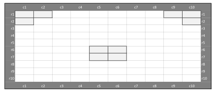

using JuMP
using HiGHS
# Model
arena_model = Model(HiGHS.Optimizer)
# Sets
row_set = 1:10
col_set = 1:10
# Group data
groups = [
"a",
"b",
"c",
"d",
"e",
"f",
"g"]
req_seats = Dict(
"a" => 1,
"b" => 2,
"c" => 2,
"d" => 4,
"e" => 4,
"f" => 6,
"g" => 6)
scores = Dict(
"a" => 1,
"b" => 2,
"c" => 4,
"d" => 4,
"e" => 5,
"f" => 6,
"g" => 12)
availability = Dict(
"a" => 3,
"b" => 2,
"c" => 3,
"d" => 5,
"e" => 2,
"f" => 1,
"g" => 1)
# Blocked seats (coordinates [row, column])
blocked_seats = [
(1, 1),(1, 2),(1,9),(1,10),
(2, 1),(2, 10),
(6, 5),(6,6),
(7, 5),(7,6),
]
# Variables
@variable(arena_model, x[groups, row_set, col_set], Bin)
# YOUR CODE BELOW
# Suggested structure:
# 1. Create parameters
# 2. Set objective function
# 3. Add constraints
# 4. Solve the modelTutorial XI - Arena Seat Planning under Distancing Rules
Applied Optimization with Julia
Introduction
Solutions
You will likely find solutions to most exercises online. However, I strongly encourage you to work on these exercises independently without searching explicitly for the exact answers to the exercises. Understanding someone else’s solution is very different from developing your own. Use the lecture notes and try to solve the exercises on your own. This approach will significantly enhance your learning and problem-solving skills.
Remember, the goal is not just to complete the exercises, but to understand the concepts and improve your programming abilities. If you encounter difficulties, review the lecture materials, experiment with different approaches, and don’t hesitate to ask for clarification during class discussions.
Imagine you’re tasked with optimizing seating arrangements for a major event venue during a pandemic. You need to balance safety with efficiency, ensuring groups can enjoy the event while maintaining proper distancing.
Your challenge is to:
- Place different-sized groups strategically
- Maintain safe distances between all attendees
- Maximize either revenue or total attendance
- Work around venue constraints and blocked seats
The Venue Layout
Here’s our event venue’s seating arrangement, as we have used in the lecture:

Group Types and Their Characteristics
We have different types of groups wanting to attend the event:
- Singles (Type ‘a’): Solo attendees
- Couples (Types ‘b’ and ‘c’): Two people travelling together
- Small families (Types ‘d’ and ‘e’): Groups of four
- Large families (Types ‘f’ and ‘g’): Groups of six
Each group type has:
- A different ticket value (score)
- Limited availability (how many such groups want tickets)
- Space requirements (how many consecutive seats they need)
As we approach the end of the course, we’ll remove some previous “guardrails” to give you more freedom in solving the problem.
Don’t worry, if you cannot solve everything by yourself. Try your best and ask for help if you need it!
1. Implement the Model
First, define all necessary sets, parameters, and variables to model the problem in Julia. The seating area layout is shown below:
Distance Requirements
The following distancing rules must be maintained:
- Minimum one empty seat between groups
- One empty seat between rows
- One empty seat diagonally
- Maximum two groups per row
- Grey seats are obstacles and cannot be used
ImportantCommon Pitfalls
Watch out for the edge cases when implementing distancing constraints - especially around blocked seats!
Define the Model
The groups are given differently than in the lecture! Either adjust the data or the model, depending on what you think is easier.
Visualization
To test your solution, visualize it with a plot in Julia. The visualization is a great tool to check if your solution is correct. We figure it is likely, that you won’t have an applicable solution after the first round, even if your model is working correctly. If everything works from the start, great!
using Plots
# Create visualization of the solution
function visualize_seating(model)
# Get solution values
solution_matrix = fill("", 10, 10)
# Fill matrix with group assignments
for r in 1:10, c in 1:10
for g in groups
if value(model[:x][g,r,c]) > 0.5 # Using 0.5 to handle floating point
solution_matrix[r,c] = g
end
end
end
# Create color mapping for groups
color_map = Dict(
"" => :white, # Empty seats
"a" => :blue,
"b" => :green,
"c" => :red,
"d" => :purple,
"e" => :orange,
"f" => :yellow,
"g" => :pink
)
# Mark blocked seats
for (r,c) in blocked_seats
solution_matrix[r,c] = "" # Empty string for blocked seats
end
# Create plot
p = plot(
aspect_ratio=:equal,
xlims=(0.5,10.5),
ylims=(0.5,10.5),
yflip=true, # Flip y-axis to match traditional seating layout
legend=:outerright
)
# Plot seats
for r in 1:10, c in 1:10
group = solution_matrix[r,c]
if group != ""
group_length = req_seats[group]
for i in 1:group_length
if c+i-1 <= 10
println("Group $group in $r,$(c+i-1)")
scatter!([c+i-1], [r],
color=color_map[group],
label=nothing,
markersize=10,
markershape=:square)
end
end
else
# Plot empty or blocked seats
is_blocked = (r,c) in blocked_seats
if is_blocked
println("Blocked seat in $r,$c")
scatter!([c], [r],
color=is_blocked ? :gray : :white,
markersize=10,
markershape=:square,
label= nothing)
end
end
end
title!("Arena Seating Layout")
xlabel!("Column")
ylabel!("Row")
return p
end
# Display the visualization
p = visualize_seating(arena_model)
display(p)If you encounter any difficulties ad cannot solve the problem, please document your issues here:
#=
=#2. Maximize the number of seats in use
Now let’s explore a different optimization objective! Instead of focusing on revenue, imagine you’re trying to accommodate as many people as possible at your venue - perhaps for a community event where maximizing attendance is more important than maximizing profit.
Think about how this changes your objective function. What matters now is not the score per group, but how many seats each group occupies!
Try implementing this new objective while keeping all the safety constraints in place.
# YOUR CODE BELOWCheck if your solution is correct by visualizing it with the visualize_seating function below.
How many seats more are in use when compared to the previous solution? Write a short code that calculates and prints the difference.
# YOUR CODE BELOWSolutions
You will likely find solutions to most exercises online. However, I strongly encourage you to work on these exercises independently without searching explicitly for the exact answers to the exercises. Understanding someone else’s solution is very different from developing your own. Use the lecture notes and try to solve the exercises on your own. This approach will significantly enhance your learning and problem-solving skills.
Remember, the goal is not just to complete the exercises, but to understand the concepts and improve your programming abilities. If you encounter difficulties, review the lecture materials, experiment with different approaches, and don’t hesitate to ask for clarification during class discussions.